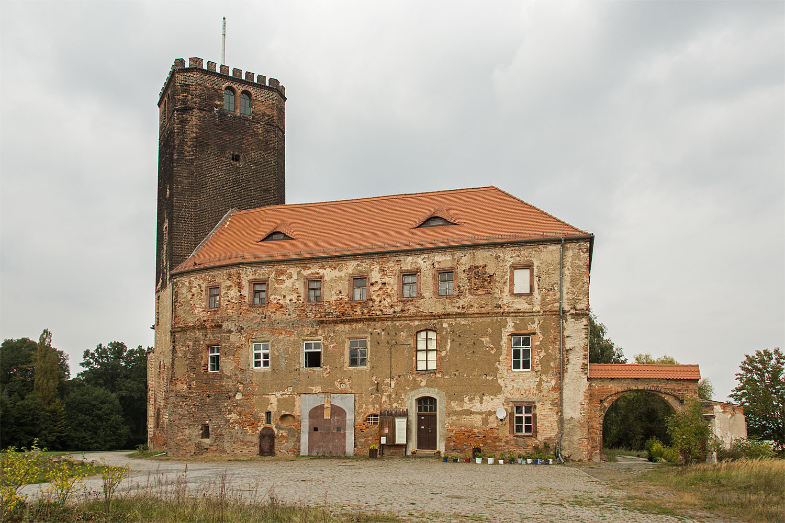
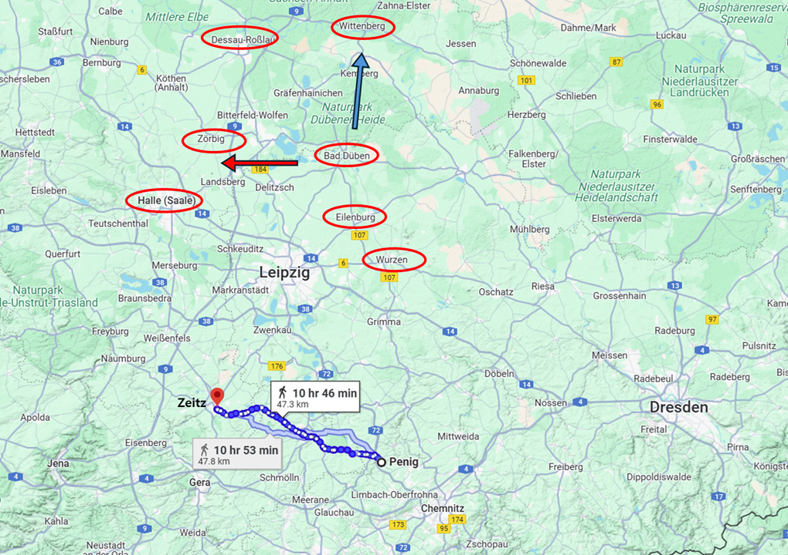
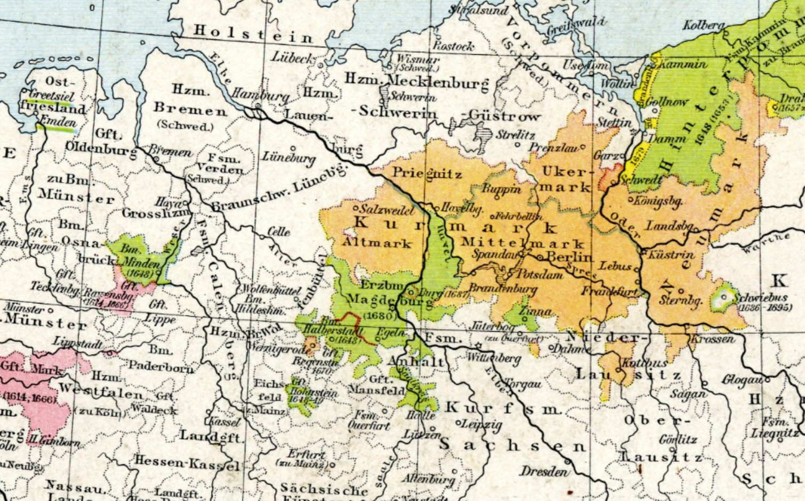
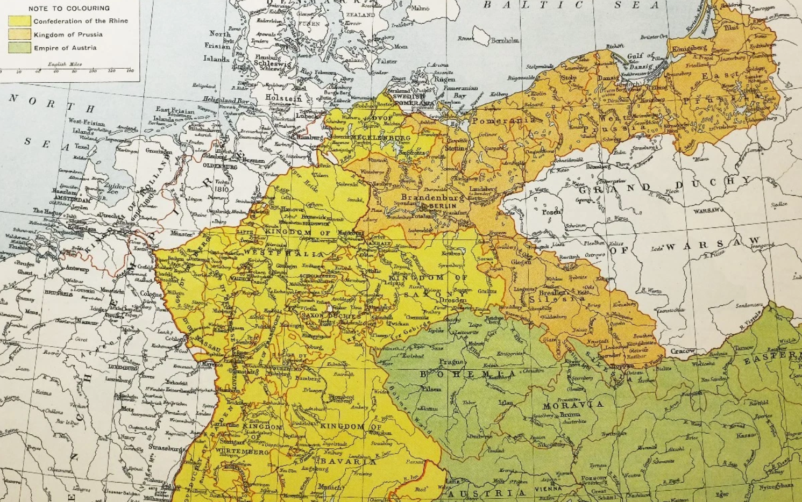
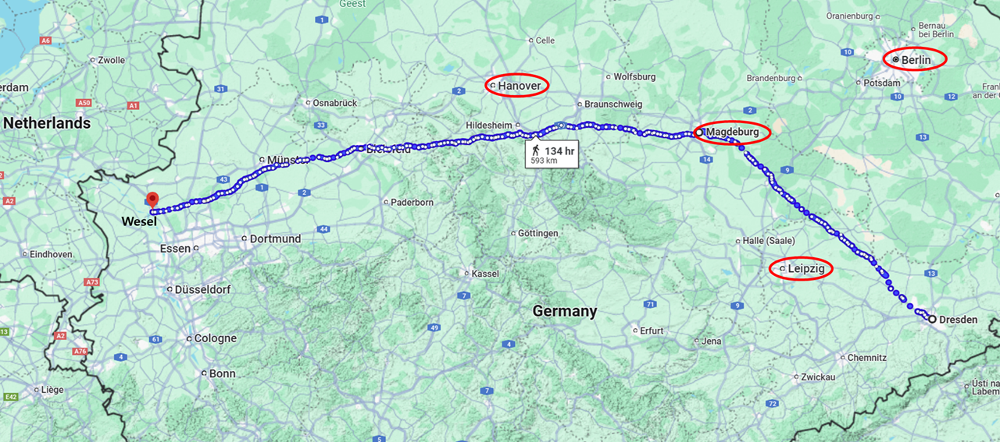
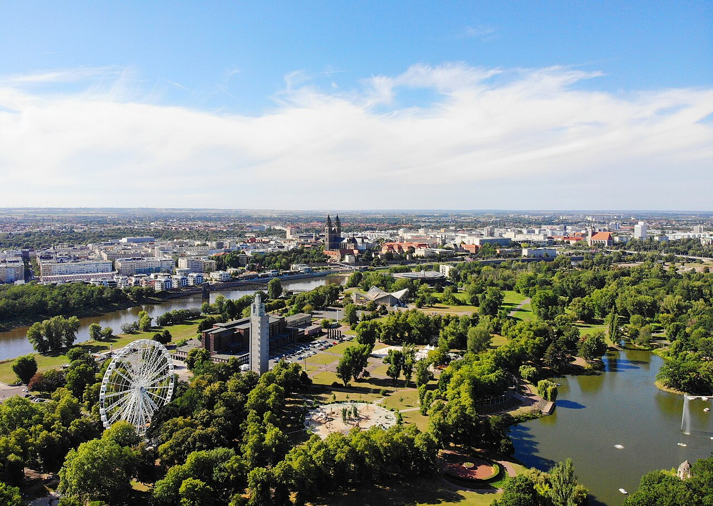

라이프치히로 가는 길 (24) - 브란덴부르크로 간다
게시: 2025-04-14T06:30:30+09:00
바트 뒤벤 성(Schloss Schnaditz, 또는 Bad Düben Schloss)에 도착한 나폴레옹을 기다리고 있던 것은 남부 전선에서 보헤미아 방면군의 진격을 저지하고 있던 뮈라가 보낸 것이었습니다. 그 보고에 따르면 오스트리아군이 페니히(Penig)를 통해 쏟아져 나오고 있고, 비트겐슈타인이 이끄는 러시아군 약 2만5천이 알텐부르크와 자이츠(Zeitz) 사이를 통해 북진하고 있었습니다. 페니히와 자이츠를 잇는 거리는 약 48km로서, 원래 나폴레옹이 뮈라에게 지키라고 지시했던 보르나(Boran)부터 로슐리츠(Rochlitz) 사이의 약 30km 전선보다 훨씬 긴 거리였습니다. 뜻하는 바는 뮈라는 보르나-로슐리츠 전선을 지킬 수 없을 것이므로 결국 라이프치히로 후퇴할 수 밖에 없다는 것이었습니다. 그대로 있다가는 저 멀리 동쪽 자이츠에서 우회하는 비트겐슈타인에게 뮈라는 후면을 차단당할 위기에 놓일 테니까요. 결국 보헤미아 방면군의 공격은 동쪽 드레스덴을 공격했던 지난 번과는 달리 훨씬 서쪽에서 전개되는 모양이니 드레스덴에 생시르의 2만5천 병력을 남겨둔 것은 역시나 괜한 병력 분산이었나 싶었지만, 보헤미아 방면군은 남는 것이 병력인지 드레스덴 방면에서도 부브나(Bubna)의 오스트리아군이 생시르를 공격하여 교전이 벌어졌습니다.

(쉬나디츠 성(Schloss Schnaditz), 또는 바트 뒤벤 성입니다. 보시다시피 성이라기보다는 커다란 장원 같은 투박한 건물로서, 원래는 13세기 경에 최초로 건설된, 이 습지대에 어울리는 해자로 보호된 요새였다고 합니다. 18세기 말 이후 작센 귀족인 Martini 가문 소유였고, 나찌 독일 시대에야 몰락한 마르티니 가문에게서 다른 사람에게 소유권이 넘어갔는데, 그래도 마르니티 가문 사람들이 계속 거주는 했습니다. 당시 거주인이었던 발터 마르티니(Walter Martini)는 독일국방군의 한스 오스터(Hans Oster) 소장과 매제 사이였고, 그래서 한스 오스터 소장도 이 성에 자주 묵었습니다. 한스 오스터는 톰 크루즈 주연의 영화 '오퍼레이션 발키리'에 묘사된 히틀러 암살 작전에 적극가담한 사람이었습니다. 전후 소련군에게 점령된 이 성은 동유럽 난민들 약 20여 가구를 수용하는데 사용되었습니다.) 나폴레옹이 의도했던 대로 전날인 10월 9일 블뤼허의 슐레지엔 방면군을 따라잡아 박살을 냈었더라면 이 소식이 그렇게까지 나쁜 소식이지는 않았을 것입니다. 그러나 주력부대를 이끌고 바트 뒤벤까지 온 마당에 블뤼허까지 놓친 상태이다보니, 아무리 나폴레옹이라고 하더라도 '지금이라도 라이프치히로 되돌아가야 하나?'하는 고민이 들지 않을 리 없었습니다. 당장 나폴레옹의 주력과 보헤미아 방면군은 라이프치히로부터 거의 비슷한 거리에 있었으므로, 만약 라이프치히에서 보헤미아 방면군과 싸우려면 지금 방향을 틀어야 했습니다. 여기서 나폴레옹이 더 머뭇거리다가는 자신이 의도했던 것과는 정반대로 오히려 뮈라의 병력이 보헤미아 방면군에게 각개격파 당해버릴 수도 있었습니다.

(지도에 표시된 여정은 남쪽에 전개된 오스트리아군의 위치인 페니히와 러시아군의 위치 자이츠입니다. 그 거리는 약 48km로서 보헤미아 방면군의 작전 범위가 굉장히 넓다는 것을 보여줍니다. 당시 나폴레옹은 바트 뒤벤에 있었습니다. 블뤼허의 뒤를 쫓아 북쪽 비텐베르크로 가던 나폴레옹은 몰랐지만 사실 블뤼허는 북쪽이 아니라 서쪽의 저비히(Zörbig)로 도주했었습니다. 완전히 헛다리 짚었던 것이지요.) 그런데 여기서 나폴레옹은 확실히 평범한 사람의 범위를 뛰어넘는 결정을 내립니다. 그는 여기까지 온 마당에 블뤼허-베르나도트 제거의 목적을 포기하고 라이프치히로 돌아가는 대신, 그대로 블뤼허의 뒤를 쫓기로 했습니다. 그대로 북진하다가 블뤼허의 뒤를 따라잡아 박살을 내놓으면 그건 그것대로 좋지만, 혹시 블뤼허를 발견하지 못한다고 하더라도 개의치 않고 그대로 엘베강을 건너 더 북진할 생각이었습니다. 라이프치히는? 그는 그 짧은 시간에, 과감히 라이프치히를 포기한다는 결정을 내렸던 것입니다. 그는 뮈라로부터의 불길한 보고서를 읽은지 2~3 시간만에 나폴레옹은 뷔르첸에 있던 마레(Maret)에게 편지를 써서 당장 그 날 밤부터 뷔르첸과 라이프치히에 집적된 모든 전쟁물자를 아일렌부르크로 옮기기 시작할 것을 지시하면서, 그의 전략을 밝혔습니다. 나폴레옹은 블뤼허와 베르나도트가 엘베강을 건너 북쪽으로 도주한다면 여유를 가지고 그들을 추격하여 끝내 패배시킬 것이며, 혹시라도 그들을 발견하지 못한다고 하더라도 엘베강 좌안 지역을 그들에게 넘겨주고 자신은 전군을 이끌고 엘베강 우안으로 넘어갈 것이라고 선언했습니다. 여태까지 그의 작전 구역은 라이프치히-드레스덴을 중심으로 하는 작센 영토였으나 이제 작센을 버리고 엘베강 우안, 그러니까 프로이센의 핵심 지역인 브란덴부르크 일대로 전장을 옮기겠다는 소리였습니다.

(이건 프리드리히 대왕의 아버지인 프리드리히 1세 시절의 브란덴부르크-프로이센의 영토 지도입니다. 보시다시피 나라 밖 저 멀리 소쪽에도 작은 영토가 있는 등 복잡합니다. 사실 오늘날 우리가 아는 프로이센의 핵심은 동부 발트해 연안의 프로이센이 아니라 베를린을 중심으로 하는 브란덴부르크 지방입니다. 이 지도의 가운데를 사선으로 가르는 굵은 검은 선이 엘베강인데, 엘베강 맨 아래쪽으로부터 드레스덴-토르가우-비텐베르크-마그데부르크가 보입니다. 엘베강이 바다로 흘러들어가는 하구에는 함부르크가 보이는데, 여기에는 나폴레옹의 원수들 중 최강이었던 다부가 주둔하고 있었습니다.)

(이 지도는 1807년 틸지트 조약 이후 대폭 줄어든 1810년 경의 지도입니다. 서쪽의 노란색 지역은 라인연방이고, 동쪽의 황색 지역인 프로이센은 발트해 연안의 원래 프로이센과 브란덴부르크, 그리고 남동쪽의 슐레지엔으로 크게 줄어있는 것을 보실 수 있습니다.)
이건 정말 획기적인 구상이었습니다. 연합군이 드레스덴이 아니라 라이프치히로 모여든 것은 나폴레옹이 가장 싫어하는 약점, 즉 그와 파리 사이의 교신을 끊을 수 있는 위치로 파고 들기 위함이었습니다. 다만 그렇게 나폴레옹의 배후로 돌기 위해서는 연합군도 자신의 근거지와의 교신이 위태로와지는 것을 감당해내야 했습니다. 가령 블뤼허는 슐레지엔으로부터, 또 베르나도트는 브란덴부르크로부터 멀리 떨어져야 했습니다. 그런데, 나폴레옹은 블뤼허와 베르나도트가 엘베강과 멀더강을 건넜다면, 굳이 작센에 연연할 필요가 없다고 판단한 것입니다. 오히려 그가 엘베강 우안으로 건너가 베르나도트의 근거지이자 프로이센의 심장인 브란덴부르크로 작전 지역을 옮기고 드레스덴에서 토르가우, 비텐베르크에서 마그데부르크로 이어지는 엘베강 우안 방어선을 구축하면 다음과 같은 장점을 누릴 수 있었기 때문이었습니다. 1) 배고픈 그랑다르메가 모든 식량을 바닥낸 작센 대신 비교적 식량이 풍부한 브란덴부르크에서 보급 문제 해결이 가능 2) 오랜 시간 포위되었던 엘베강의 요새 비텐베르크의 포위를 풀 수 있을 뿐만 아니라, 더 나아가 동쪽 오데르강 요새들의 포위도 풀고 다시 한 번 폴란드를 장악할 수 있음. 3) 그의 가장 뛰어난 원수인 함부르크의 다부와도 연계가 가능 4) 이 모든 것을 다 누리면서도 파리와의 교신은 드레스덴-마그데부르크-베젤(Wesel)을 잇는 도로를 통해 원활하게 가능 5) 반면에 황폐한 작센에 남게 된 연합군은 브란덴부르크 및 슐레지엔과의 보급로를 끊겨, 얼츠거비어거 산맥을 넘어야 하는 보헤미아로부터의 보급에만 의존해야 함 5) 만약 연합군이 닭 쫓던 개처럼 엘베강 우안으로 건너오지 않는다면, 그대로 일부 병력을 파견하여 텅빈 베를린을 점령하고 프로이센의 연합 이탈을 압박

(드레스덴에서 마그데부르크를 지나 프랑스와의 접경 지역인 서부 독일 베젤을 잇는 도로망의 길이는 약 600km로서, 그 도로가 엘베강을 관통하는 곳은 바로 마그데부르크였습니다.)

(엘베 강변의 도시인 마그데부르크는 원래 프로테스탄트 도시로서, 17세기 전반에 벌어진 30년 전쟁에서 오스트리아군에게 함락되어 약 2만의 시민들이 도륙을 당하고 생존자가 4천에 불과할 정도의 비극을 겪었습니다. 결국 30년 전쟁을 끝낸 베스트팔렌 조약에서 이 도시는 프로이센의 관할지가 되었습니다. 1807년 틸지트 조약에 의해 나폴레옹에게 빼앗기기 이전까지 프리드리히 빌헬름이 많은 자본을 들여 개발하던 알짜배기 영토였습니다.) 여기서 남는 유일한 문제는 라이프치히 남쪽에서 방어선을 구축한 뮈라의 병력은 어떻게 하느냐였습니다. 그런데 그것도 어려울 것이 없었습니다. 그냥 그대로 후퇴하여 토르가우나 비텐베르크로 후퇴하여 자신과 합류하라고 하면 되었으니까요. 실은 훨씬 더 중요한 문제가 하나 더 있었습니다. 바로 작센은 어떻게 할 것이냐 하는 것이었습니다. 수도 드레스덴은 지키고 있다고 해도, 나폴레옹이 엘베강 우안으로 넘어간다는 것은 작센을 연합군 손에 넘겨주는 것을 뜻했습니다. 당장 뷔르첸에서 대기 중이던 작센 국왕에게도 할 말이 없었습니다. 나폴레옹은 이 모든 계획을 적은 편지를 마레에게 보내며, '작센 국왕에게는 이 사실을 알라지 말고 그냥 토르가우 또는 비텐베르크로 보내도록 하라'고 지시했습니다. 한마디로 나폴레옹은 동맹을 소중히 여기는 마음 따위는 1도 없었던 것입니다.
(작센 국왕 아우구스투스 1세(Friedrich August I)입니다. 그는 비교적 괜찮은 군주로서, 어려운 시절에 나라의 평화와 독립을 위해 많은 애를 썼고, 백성들로부터도 꽤 지지를 받는 편이었습니다. 그러나 이렇게 나폴레옹에게 힘없이 끌려다니는 신세가 되었고, 나폴레옹 몰락 이후 빈 회의에서 프로이센에게 영토의 상당 부분을 빼앗기게 됩니다.) 그러나 이미 다들 아시는 것처럼 일은 나폴레옹의 의도대로 흘러가지 않습니다.
Source : The Life of Napoleon Bonaparte, by William Milligan Sloane Napoleon and the Struggle for Germany, by Leggiere, Michael V With Napoleon's Guns by Colonel Jean-Nicolas-Auguste Noël https://www.britannica.com/event/Napoleonic-Wars/Dispositions-for-the-autumn-campaign https://www.napoleon.org/en/history-of-the-two-empires/timelines/1813-and-the-lead-up-to-the-battle-of-leipzig/ http://www.historyofwar.org/articles/campaign_leipzig.html https://de.wikipedia.org/wiki/Schloss_Schnaditz https://en.wikipedia.org/wiki/Magdeburg https://en.wikipedia.org/wiki/Frederick_Augustus_I_of_Saxony https://en.wikipedia.org/wiki/Brandenburg%E2%80%93Prussia